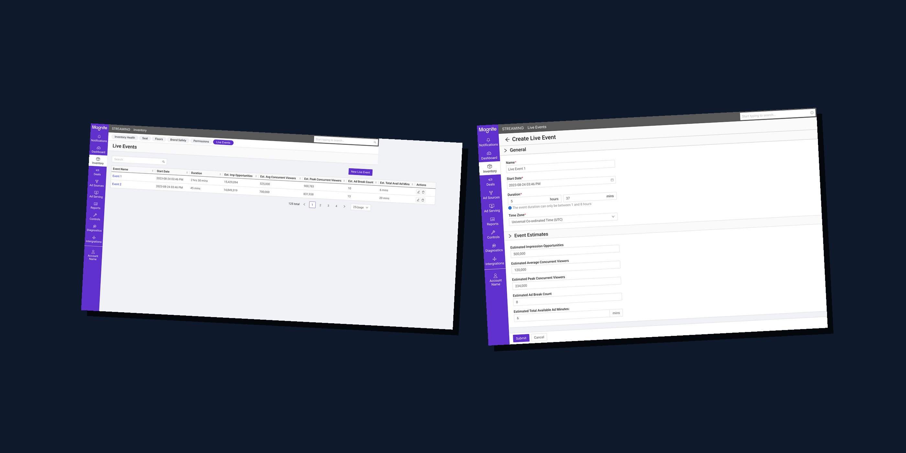
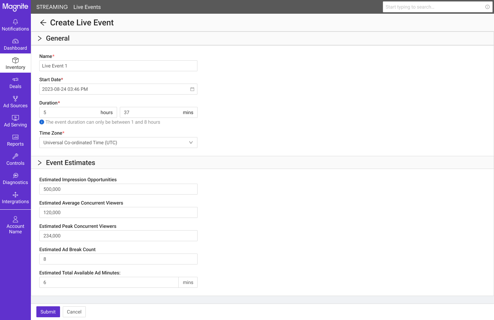
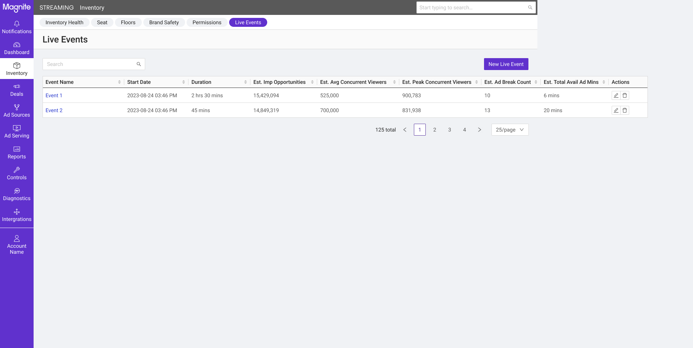
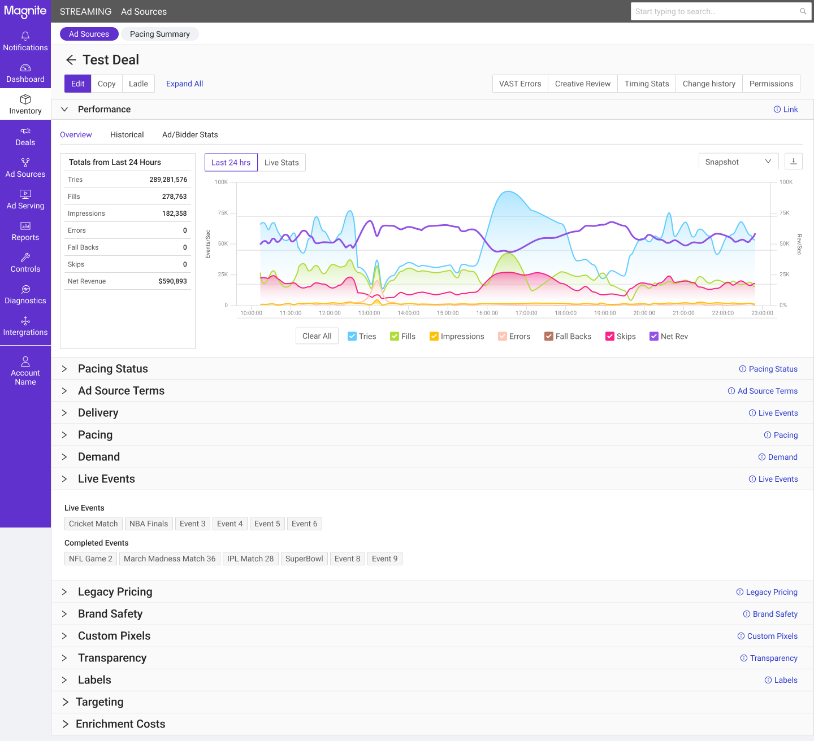
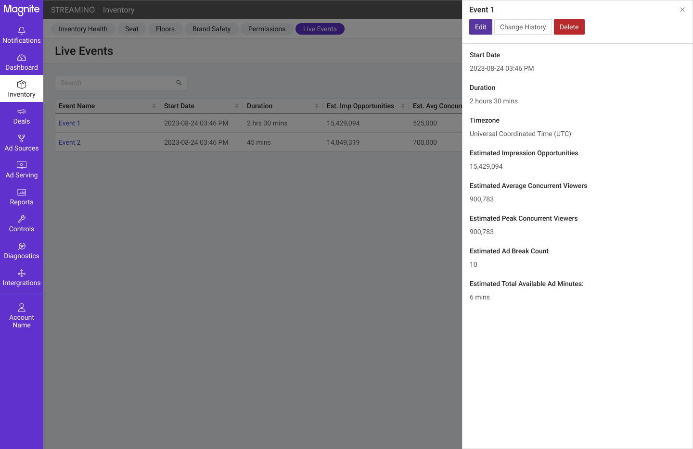
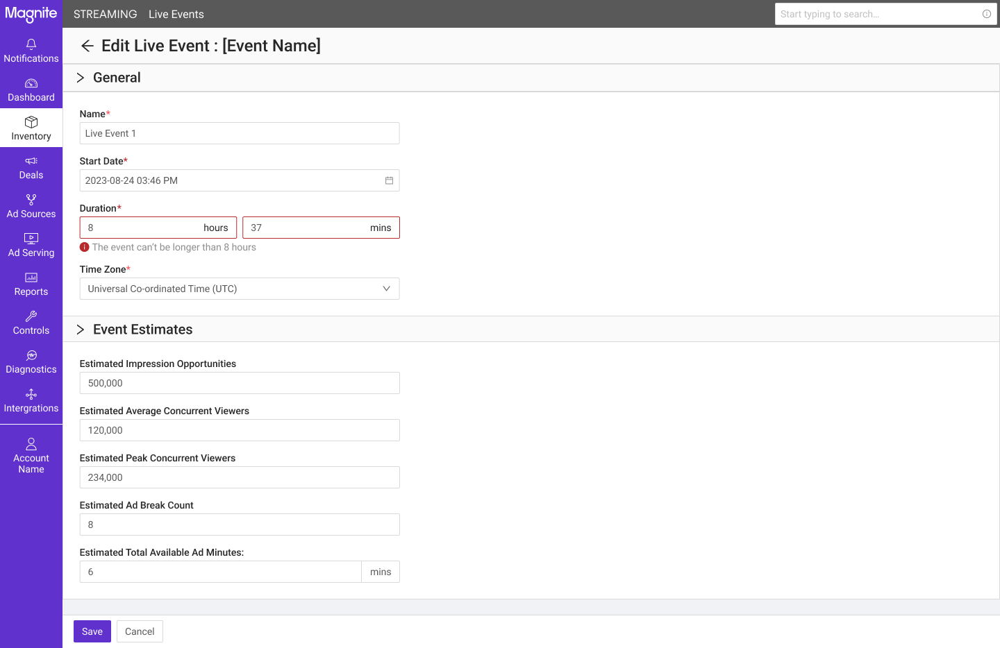

Introducing live events as a first-class object in Magnite's DV+ platform — giving publishers a structured way to communicate live programming to the pacing engine, and giving the platform the metadata it needs to deliver ads reliably during burst-traffic moments.

Magnite's DV+ platform is built for streaming — but streaming isn't a monolith. On-demand content delivers predictable, spread-out traffic. Live events — sports, breaking news, award shows, political coverage — deliver something completely different: synchronized viewership where millions of people tune in at once, ad breaks that hit simultaneously across the audience, and impression volumes that spike and drop on a schedule tied to real-world events.
The platform's pacing engine wasn't blind to this problem — it was just missing the information it needed to handle it well. Publishers knew when their live events were scheduled, what their expected audience looked like, and how many ad breaks they had planned. But there was no structured way for them to communicate any of that to the platform. Live events were treated as unmarked inventory, indistinguishable from any other stream until the traffic patterns revealed otherwise.
Connected TV is where premium live inventory lives — and premium live events command some of the highest CPMs in programmatic advertising. Getting ad delivery right during a live event isn't just a technical concern; it's directly tied to publisher revenue and buyer confidence. A pacing engine working with accurate live event metadata can deliver ads reliably during high-value moments instead of under- or over-pacing based on assumptions built for on-demand content.
Live events create a set of conditions that standard pacing assumptions aren't built for. The platform was encountering all three without the context to distinguish them from ordinary traffic variation.
The solution wasn't a settings toggle or a metadata flag. It required a purpose-built object that could capture rich event context, attach cleanly to existing ad delivery infrastructure, and give both the pacing engine and the reporting layer the structured data they needed to act on live events appropriately.
The most fundamental decision was how to model a live event in the product. Two options were on the table: treat live events as a flag or attribute on existing objects (ad sources, deals), or give them their own dedicated object — on par with Ad Units, Ad Sources, and Deals in the platform hierarchy.
We went with first-class object. A flag would have been simpler to build, but it couldn't hold the richness of data the pacing engine needed: start and end times, timezone, estimated impressions, peak and average concurrent viewers, ad break count, total available ad minutes. That level of metadata only makes sense as a standalone object with its own lifecycle — creation, editing, deletion, and attachment to other objects.

Because Live Events became a first-class seat-level object, they needed a home in the platform's navigation that reflected that status — not buried inside ad source settings or tucked under a miscellaneous section. The listing page and creation flow were designed to sit alongside other top-level inventory management objects, making it immediately clear to publishers that this is a first-party configuration surface, not an afterthought.

The integration point with the pacing engine is the ad source. Live Events attach to Programmatic Guaranteed ad sources using any of the standard pacing types — ASAP, Evenly, Front Loaded, or Custom. This attachment is what lets the engine consume the structured event metadata; it doesn't require a new pacing mode, just a new data input into existing pacing logic.
The relationship is many-to-one: a publisher can associate multiple live events with a single ad source, which matters for broadcast scenarios where a single PG deal spans several scheduled events. The design decision was where to surface this attachment. Rather than requiring publishers to navigate to the ad source and configure it there, the relationship is accessible from both directions — from the Live Event and from the Ad Source — so publishers can manage it in context of whichever object they're working in.

Beyond pacing, Live Events needed to be targetable, filterable in waterfall logic, and reportable. A new label property enables this across four surfaces: targeting, waterfall pre-filtering, reporting and dashboards, and forecasting and demand analysis. Each live event maps to exactly one label — a deliberate 1:1 constraint that keeps the targeting logic clean and prevents ambiguous associations across events.
Only labels specifically flagged for live event use can be associated with a live event. This prevents publishers from accidentally attaching general-purpose labels to event objects and ensures the label data downstream is clean for reporting.
The more complex design challenge was Advanced Labelling — a mechanism to dynamically stamp ad requests with live event labels via targeting rules, rather than requiring publishers to pass labels manually on every request.
The way it works: when an ad request comes in, the platform evaluates matching Advanced Labelling rules. If a matched label is a live event label and the current time falls within the event's window, the label is automatically attached to the request. Publishers don't have to do anything per-request — they set up the rule once, and the platform handles the stamping during the live window. This was the key operational unlock for publishers with high event volumes who couldn't instrument every stream manually.

Live events are time-bound and high-stakes. An event with incorrect timing or conflicting configuration can't just fail silently — publishers need to know what's wrong and be able to fix it before the event starts. Several system constraints had to surface clearly in the UI: events are capped at 8 hours, peak concurrent viewer estimates must be greater than or equal to average concurrent estimates, and attachment is restricted to PG ad source types with compatible pacing configurations. Validation was built to surface these conflicts inline with specific messages identifying the problem field, rather than generic submission errors that leave publishers guessing.

The feature was scoped into three phases — not as separate projects, but as a deliberate sequencing of capabilities that let the platform and publishers start deriving value before every feature was built.
The first phase established the Live Event object itself: CRUD operations via both the UI and the internal API, ad source attachment, and pacing engine consumption of the new metadata. This was the minimum viable version — publishers could create and manage events, and the pacing engine could act on them. Everything in subsequent phases built on this foundation.
Phase 1 expanded the metadata fields available on each event — adding ad request pattern context, originating regions, and timeout windows — and introduced two new ingestion paths: a public API and CSV bulk upload. For publishers managing a high volume of live events — a sports network, a news channel — manual entry via the UI isn't scalable. The API and bulk upload paths let publishers integrate event scheduling into their existing operational workflows. Live event labels were also introduced in this phase, enabling targeting, waterfall pre-filtering, and reporting against live inventory.
The final phase introduced Advanced Label Application — the time-window-based dynamic stamping mechanism described above. Label logging was extended to cover live event labels regardless of how they were attached (request param, advanced labelling, or static association), enabling live event dashboards and forecasting to derive data from ad stats records. Brand safety rules scoped to live event inventory rounded out the feature set.
Phasing this way let publishers start using live events immediately, while giving the platform time to build the more complex labeling and reporting infrastructure the feature ultimately needed.
— On the phased delivery approachLive Events Support is fully in production across all three phases as of 2026. Publishers on DV+ now have a dedicated, structured way to communicate live programming to the platform — and the pacing engine has the metadata it needs to handle burst-traffic inventory appropriately.